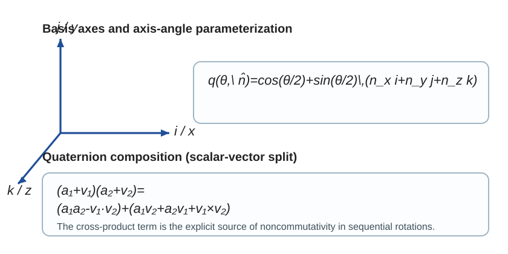

1. Introduction
Single-qubit quantum mechanics is usually taught in matrix language: states are vectors in C2, observables are Hermitian matrices, and gates are unitary matrices. That formulation is complete and standard. The present paper addresses a narrower question of representation. For single-qubit structure, quaternionic notation can expose geometry that matrix notation already contains but often leaves implicit.
The paper therefore does not propose a replacement for standard quantum mechanics. Its aim is instead to organize a set of familiar facts with unusually explicit distinctions: normalized vectors in C2; the unit 3-sphere in that space; pure states modulo global phase; the Bloch sphere; single-qubit gates in U(2); SU(2) representatives after removing overall phase; and the unit quaternions as a model of SU(2).
The organizing idea is classical. A normalized two-component spinor is a point on S3; SU(2) is also diffeomorphic to S3; and the unit quaternions form a Lie group isomorphic to SU(2). That shared geometry does not mean these objects should be identified indiscriminately. A principal task of the paper is to keep their roles separate while showing how they fit together.
2. Mathematical preliminaries
2.1 Qubits as normalized vectors in C2
A normalized single-qubit state is represented by a spinor |ψ⟩ = (α, β)T with |α|2 + |β|2 = 1. Writing α = a + ib and β = c + id identifies C2 with R4.
Indeed, the normalization condition becomes a2 + b2 + c2 + d2 = 1, which is precisely the defining equation of S3.

2.2 Pure states, global phase, and the Bloch sphere
Two normalized vectors |ψ⟩ and eiχ|ψ⟩ represent the same pure state. The pure-state space is therefore the projective quotient CP1. For a normalized spinor, the Bloch vector is
r(ψ) = (2 Re(α*β), 2 Im(α*β), |α|2 − |β|2) ∈ S2.2.3 Single-qubit gates in U(2)
Single-qubit gates live in U(2). Since an overall phase on a gate is physically irrelevant at the level of pure states, one often chooses a representative in SU(2).
This does not mean gates “are” SU(2). The more precise statement is that physically relevant single-qubit gate classes admit SU(2) representatives after overall phase has been removed from U(2).
2.4 Unit quaternions
The quaternion algebra H has basis 1, i, j, k with i2 = j2 = k2 = ijk = −1. A quaternion is q = a + bi + cj + dk. Its conjugate is q̄ = a − bi − cj − dk, and its norm is |q| = (a2 + b2 + c2 + d2)1/2.
The unit quaternions form the group Sp(1) = {q ∈ H : |q| = 1}, which is also a copy of S3 as a manifold.
3. SU(2) and the unit-quaternion model
The paper uses the explicit identification
Φ(a + bi + cj + dk) = [[a − di, −c − bi], [c − bi, a + di]].Equivalently, Φ(q) = aI − i(bσx + cσy + dσz). This convention is standard, but it is also a choice: it aligns the quaternion basis units directly with the x-, y-, and z-axis Pauli generators.

The proof is straightforward: Φ respects the quaternion multiplication rules, the determinant of Φ(q) is |q|2, and every matrix in SU(2) has the standard form [[α, β], [−β*, α*]], which yields a unique quaternion preimage.
The important precision point is that this is a model for SU(2) representatives of single-qubit gates, not a denial that the full gate group is U(2).
4. Quaternionic geometry and rotation structure
4.1 Axis-angle form
Every element of SU(2) can be written as
V = cos(θ/2) I − i sin(θ/2) (n̂ · σ).Under Φ, the corresponding quaternion is
q = cos(θ/2) + sin(θ/2) (nx i + ny j + nz k).In particular, π-rotations about the coordinate axes correspond, up to global phase, to the basis units i, j, and k.
4.2 Composition law
Writing q = a + u with scalar part a and pure part u ∈ R3, quaternion multiplication takes the form
(a1 + u1)(a2 + u2) = (a1a2 − u1·u2) + (a1u2 + a2u1 + u1×u2).This formula makes the geometry unusually explicit. The scalar part records a dot product, the pure part contains a cross product, and the noncommutativity of sequential rotations is visible at a glance rather than being hidden inside matrix multiplication.

4.3 The double cover SU(2) → SO(3)
Conjugation of pure quaternions by a unit quaternion, v ↦ qvq−1, preserves the pure-quaternion subspace and Euclidean norm. This gives a homomorphism ρ: Sp(1) → SO(3).
This is the standard group-theoretic source of the familiar spinorial fact that a 2π spatial rotation lifts to a path from I to −I in SU(2).
5. Standard mathematics vs. RQM Technologies framing
5.1 Standard mathematics used here
The following are standard facts rather than project-specific claims: normalized spinors form S3; pure states are CP1 ≅ S2; gates live in U(2); modulo overall phase they admit SU(2) representatives; unit quaternions form a Lie-group model of SU(2); and SU(2) double-covers SO(3).
5.2 RQM framing choices
The project-specific element of this paper is modest. RQM Technologies chooses to use the quaternion model as a primary expository language for single-qubit gate geometry, and it fixes a specific standard convention for the quaternion-matrix correspondence so that the quaternion basis units align with the Pauli axes. These are organizational choices, not claims of new mathematics or new physics.
6. Scope, limitations, and non-claims
- This paper does not claim a replacement of standard quantum mechanics.
- It does not claim a hardware or algorithmic advantage.
- It does not claim that matrix methods are inadequate.
- It does not develop a multi-qubit quaternionic state formalism.
- It does not address quaternionic Hilbert-space quantum mechanics in the sense studied by Adler.
7. Conclusion
For a single qubit, quaternions belong naturally in the mathematics because unit quaternions provide an explicit model of SU(2), and SU(2) is the natural determinant-one representative group for single-qubit gates after global phase has been removed from U(2). The value of the quaternion language is therefore representational and geometric: it makes axis-angle structure and rotation composition easier to see, while leaving the underlying quantum theory unchanged.
Appendix A. Structured companion summary
| Claim ID | Type | Statement summary |
|---|---|---|
| prop-1 | proposition | Normalized spinors in C2 form S3. |
| prop-2 | proposition | Pure single-qubit states are CP1 ≅ S2. |
| prop-3 | proposition | Every U(2) gate factors into a global phase times an SU(2) element. |
| prop-5 | proposition | Unit quaternions are isomorphic to SU(2). |
| cor-6 | corollary | Gate composition corresponds to quaternion multiplication. |
| prop-7 | proposition | SU(2) and Sp(1) double-cover SO(3). |
| int-9 | interpretive claim | RQM framing uses the quaternion model as a primary expository language for single-qubit gate geometry. |
| Symbol | Meaning | Status |
|---|---|---|
| |ψ⟩ | Normalized state vector in C2 | standard |
| S3 | Unit sphere of normalized spinors; also manifold of unit quaternions | standard |
| CP1 | Projective pure-state space | standard |
| S2 | Bloch sphere | standard |
| U(2) | Full single-qubit gate group | standard |
| SU(2) | Determinant-one unitary representatives modulo global phase | standard |
| q | Quaternion or unit-quaternion gate representative | standard |
| Φ | Chosen quaternion-matrix identification | variant |
For machine-readable versions of the complete claim, notation, and glossary records, see claims.json, notation.json, and glossary.json.
References
- Adler, Stephen L. Quaternionic Quantum Mechanics and Quantum Fields. Oxford University Press, 1995.
- Bloch, Felix. “Nuclear Induction.” Physical Review 70(7–8):460–474, 1946. DOI: 10.1103/PhysRev.70.460.
- Hall, Brian C. Lie Groups, Lie Algebras, and Representations: An Elementary Introduction, 2nd ed. Springer, 2015.
- Kuipers, Jack B. Quaternions and Rotation Sequences: A Primer with Applications to Orbits, Aerospace, and Virtual Reality. Princeton University Press, 1999.
- Nielsen, Michael A., and Isaac L. Chuang. Quantum Computation and Quantum Information, 10th Anniversary Edition. Cambridge University Press, 2010.
- Penrose, Roger, and Wolfgang Rindler. Spinors and Space-Time. Volume 1: Two-Spinor Calculus and Relativistic Fields. Cambridge University Press, 1984.